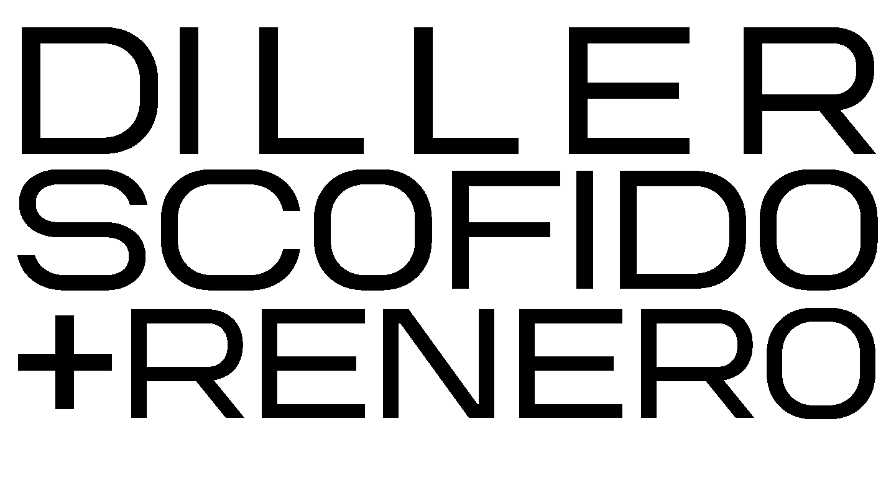

Toggle navigation
Projects
Studio
Contact
News
All Projects
Cultural
Installation
Display
Objects
Performance
Publications
Public Space
Urban
Nature
Building
Sustainability
Landscape
Public
Education
Education
Building
Sustainability
Residential
Housing
High Rise
Historic
Competition
Commercial
Building
Display
Objects
Commercial
Search projects
Sort By
Relevance
Name
Newest
Sort direction
Ascending
Descending
Grid
List
Upper Montparnasse, 2027
Therme Dubai, 2025
Parco Romana, 2025
Pirelli 39, 2021
London Wall West, 2020
The Broad, 2015
The Tide, 2019
Institute of Contemporary Art, 2006
Blur Building, 2002
Lincoln Center, 2012
No projects match your search.